class Author < ApplicationRecord
end

A Quick Tour
Pierre RiouxACElab Developer Meeting, June 2018
A presentation in three parts:
- Quick intro to Ruby (14 slides)
- Quick intro to Rails (17 slides)
- CBRAIN as a platform (214 slides)
All of this, prepared for experienced programmers.
Ruby
A programming language
Ruby
- Fully object-oriented
- Single inheritance
- Everything is an object:
- Numbers are objects
- Strings are objects
- Methods are objects
- Classes are objects
- Operators are objects
- Code blocks are objects
- etc
- Semicolons ( ; ) are optional
- Parenthesis for method args are optional
A few Ruby statements
"abcd".size # returns 4
3.1415.to_s # returns "3.1415"
class Example
def self.hello
puts "I'm a class method"
end
def hello
puts "I'm an instance method"
end
end
Example.hello # prints "I'm a class method"
Example.hello() # same; parens are optional
obj = Example.new
obj.hello # prints "I'm an instance method"
Objects are NOT data containers
Unlike in, say, JavaScript, objects do not store key/values.
- Getters and setter methods need to be created
- Data is stored in instance variables
- They look like @variable_name
class Example
def set_name(value)
@name=value
end
def name
return @name # the 'return' is optional
end
end
obj1 = Example.new
obj1.set_name("Saturn V rocket")
obj2 = Example.new()
obj2.set_name "Titanic"
puts obj2.name # prints 'Titanic'
Symbols
A special data type unique to Ruby are symbolsThey look like :symbolname
They basically are used as fast replacement for constant strings.
They are NOT strings, but can be transformed into strings.
myvariable = :hello
obj = SomeClass.new
obj.some_method "all_ok"
obj.other_method :all_ok
:rockets_are_cool.to_s # returns "rockets_are_cool"
Hash and array literals
They pretty much look like those in Perl or Python
mixed_hash = { "abcd" => 23, :defg => "aa", 34 => 41 }
symbol_hash = { :abcd => 23, :defg => "aa" }
symbol_hash = { abcd: 23, defg: "aa" } # alternative syntax when keys are all symbols
mixed_array = [ 'abcd', 99, Object.new, { "a" => 1 }, :yoshi ] # array of 5 elements
the { and } are optional
obj.dostuff(23, "hello", { :name => "pierre", :age => 76 })
obj.dostuff(23, "hello", :name => "pierre", :age => 76 ) # 3 arguments, not 4
obj.dostuff 23, "hello", name: "pierre", age: 76
Method names with ? or !
These two characters can appear only asthe last character in a method name.
Their use is often esthetic.
class Something
def is_alive?
blah blah
end
def validate!(mode = :relax) # argument has default value
blah blah
end
end
a_something.is_alive?
a_something.validate! # inside, mode is :relax
a_something.validate! :strict # now it's :strict
x="hello"
x.sub("lo","p") # returns "help" and doesn't change x
x.sub!("lo","p") # returns "help" and change x to "help"
Assignment methods with =
For a more elegant syntax, methods can be invoked as assignment.
# Method with one argument, invoked in the traditional way
def standard(value)
do_something_with value
end
obj.standard("hello")
# Method with one argument, invoked as an assignment
def assignment=(value) # note the '=' is part of the method name!
do_something_with value
end
obj.assignment = "hello" # the method is "assignment="; spaces are allowed within!
Most operators are methods
So they can be overriden for your classes
class Something
def name=(arg)
@name=arg
end
def +(rightside)
[ @name , rightside.name ]
end
end
v1 = Something.new; v1.name = "Marilyn"
v2 = Something.new; v2.name = "Monroe"
v1 + v2 # returns [ "Marylin", "Monroe" ]
v1 + a_user # returns [ "Marylin", "Robert" ] assuming a_user has a name() method.
Many operators can be redefined that way:
+, -, *, |, &, +=, -=,
<<, >>, >>=, etc
Code blocks for methods
- All methods can take an optional code block as a final argument
- It is one of the essential distinguishing feature of Ruby
- Methods are free to ignore the block, or call it multiple times
- Blocks are written with the do ... end or { ... } syntax
obj.mymethod(arg1,arg2) do
codeblock1
codeblock2
end
obj.mymethod(arg1,arg2) { # same as do .. end
codeblock1
codeblock2
}
244.to_s(16) do
puts "This is never executed"
end # returns the string "f4" which is 244 in hexadecimal
244.to_s(16) { a = 2 + 3 ; system.reboot } # returns "f4" again
Arguments to blocks
Blocks can be passed arguments with the |var1,var2...| syntax
# Prints three lines:
# Z
# 4
# +
["Z", "4", "+"].each { |c| puts c } # each() is an Array method for iterating
# Prints three lines:
# Z0
# 41
# +2
["Z", "4", "+"].each_with_index do |c,i|
puts(c + i.to_s)
do
Blocks are invoked with yield
class Something
def invoke_and_save
@save = yield
end
def invoke_with_pi
yield(3.14)
end
def vowels
yield('a') ; yield('e') ; yield('i') ; yield('o') ; yield('u')
end
end
obj=Something.new
obj.invoke_and_save { "Hello " + 3.to_s } # internally, @save is now "Hello 3"
obj.invoke_with_pi { |value| puts "I got " + value.to_s } # prints "I got 3.14"
pi_plus_2 = obj.invoke_with_pi { |value| value + 2 } # stores 5.14 in pi_plus_2
obj.vowels { |v| puts v } # block is executed five times
Methods can save the block for later use
class Something
def saveblock(&block) # special syntax to associate an argument to the block
@call_this_later = block
end
def invoke_saved_block(argument)
@call_this_later.call(argument)
end
end
obj = Something.new
obj.saveblock { |x| puts "The string has " + x.size + " characters" }
obj.invoke_saved_block "hello" # prints "The string has 5 characters"
obj.saveblock { |x| x.reverse }
obj.invoke_saved_block "hello" # returns (without printing it) "olleh"
Intercepting missing methods
class Something
def method_missing(name,*args) # * is the splat operator for varargs
puts "Eh bud, I got method #{name} but it doesn't exist."
end
end
obj=Something.new
obj.oh_no!('sorry man') # prints "Eh bud, I got method oh_no! but it does't exist."
This is often use to provide dynamic capabilities to classes.
Methods can be created the first time they are missing, and then the following times the method will exist and will respond quickly.
# Rails example:
User.find_by_login('prioux') # there is no such method, but it's created right away
User.find_by_login('mmonroe') # now the method does exist.
Domain Specific Languages
Ruby's syntactic flexibility makes it ideal for elegant DSLs.
# This is Ruby code:
This is ruby code
# It's executed as:
This(is(ruby(code())))
# A DSL I made up to describe a SQL table.
# It is Ruby code that assumes the methods
# "table", "column", "type" etc have been defined elsewhere.
table "users" do
column :id
column :login do
type :string
length 256
end
has_many do
other_table "files"
remote_key :user_id
end
end
Rails
A web framework
Rails
- A framework for creating web applications
- Follows the Model-View-Controller (MVC) architecture
- Database abstraction: ActiveRecord
- Provides helpers for routing, migrations, views
- Multi-layer middleware with the web server at the top
- Normally (and originally) developed in Ruby (thus, "RoR")
- Immense autoconfiguration and meta-programming core
- "Convention over configuration"
Rails
Models
Models: let's start with a DB
mysql> select * from authors;
+----+------------+-----------+
| id | first_name | last_name |
+----+------------+-----------+
| 1 | Pierre | Rioux |
| 2 | Jane | Austen |
| 3 | Samir | Das |
+----+------------+-----------+
3 rows in set (0.00 sec)
mysql> select * from books;
+----+--------------------------------+-----------+--------------+
| id | title | author_id | published_at |
+----+--------------------------------+-----------+--------------+
| 1 | How to cheat at origami | 1 | 2018-01-03 |
| 2 | Pride And Potatoes | 2 | 1798-04-21 |
| 3 | Some sunglasses for Kiki | 3 | 1995-05-10 |
| 4 | Kiki vs the sunglasses tyrants | 3 | 2005-11-21 |
| 5 | The sunglasses of God | 3 | 2015-12-04 |
+----+--------------------------------+-----------+--------------+
5 rows in set (0.00 sec)
Model conventions
- Primary key is id
- Table name is pluralized
- Attributes (columns) are lowercase simple identifiers
- Model names will be singular of table name (e.g. Author, Book)
- Relation use othermodel_id (e.g. author_id)
Ruby classes for the models
app/models/author.rb
app/models/book.rb
class Book < ApplicationRecord
end
These files are shown complete!
Model methods
# Creating new records
n = Book.new( :title => 'My Stupid Cat', :author_id => 23 )
# Finder mehods
a = Author.find(2) # Jane Austen
b = Book.find(4) # "Kiki vs the sunglasses tyrants"
# Attribute methods
first_name = a.first_name # Get an attribute
b.title = 'Of mice and Zen' # Set an attribute
# Saving or destroying an object
n.save # Writes new row in database
n.destroy # Removes row
# Misc
b.valid?
b.changed? # True if modified in memory
n.new_record? # Returns true until saved
Querying
# Create querying objects with WHERE clauses
r1 = Author.where(:last_name => 'Das') # does NOT query yet
r2 = r1.where(:first_name => 'Beyoncé')
# SELECT `authors`.* FROM `authors` WHERE `authors`.`last_name` = 'Das'
a_list = r1.to_a # Array of Author objects
# SELECT `authors`.* FROM `authors`
# WHERE `authors`.`last_name` = 'Das'
# ORDER BY `authors`.`id` ASC LIMIT 1
a1 = r1.first
# SELECT `authors`.* FROM `authors`
# WHERE `authors`.`last_name` = 'Das'
# AND `authors`.`first_name` = 'Beyoncé'
# ORDER BY `authors`.`id` DESC LIMIT 1
a2 = r2.last # returns nil in this case
# SELECT COUNT(*) FROM `authors` WHERE `authors`.`last_name` = 'Das'
das_count = r1.count
Relations
app/models/author.rb
class Author < ApplicationRecord
has_many :books
end
app/models/book.rb
class Book < ApplicationRecord
belongs_to :author
end
Relation methods
a=Author.where(:last_name => 'Das').first
# Author Load (0.9ms) SELECT `authors`.* FROM `authors` WHERE
# `authors`.`last_name` = 'Das' ORDER BY `authors`.`id` ASC LIMIT 1
a.books.to_a
# Book Load (0.4ms) SELECT `books`.* FROM `books` WHERE `books`.`author_id` = 3
' => [
#<Book id: 3, title: "Some sunglasses for Kiki", author_id: 3 ... >,
#<Book id: 4, title: "Kiki vs the sunglasses tyrants", author_id: 3 ... >,
#<Book id: 5, title: "The sunglasses of God", author_id: 3 ... >
] '
b=Book.last
# Book Load (1.2ms) SELECT `books`.* FROM `books` ORDER BY `books`.`id` DESC LIMIT 1
b.author
# Author Load (0.4ms) SELECT `authors`.* FROM `authors` WHERE `authors`.`id` = 3 LIMIT 1
' => #<Author id: 3, first_name: "Samir", last_name: "Das"> '
Validations and callbacks
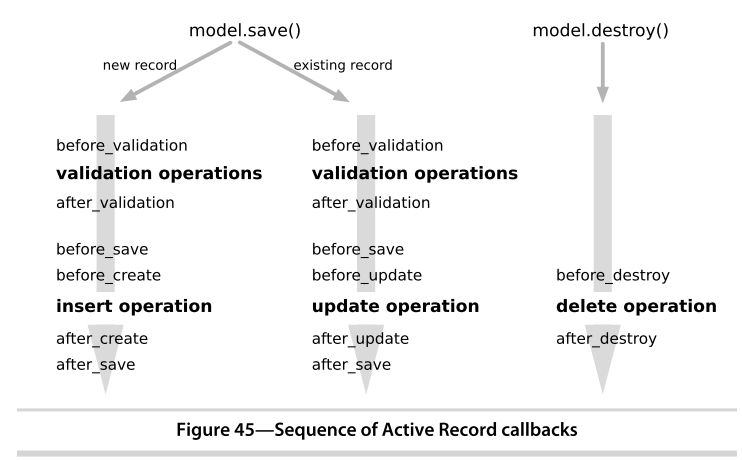 From Agile Web Development with Rails 4, S. Ruby, D. Thomas, D. H. Hansson, 2014Validations and callbacks
app/models/book.rb
class Book < ApplicationRecord
belongs_to :author
validate_presence_of :published_at
validates :last_name_has_uppercase?
after_create :new_book_added
def last_name_has_uppercase?
self.last_name =~ /^[A-Z]/
end
def new_book_added
# do something with self only when new book created
end
end
Single Table Inheritance
app/models/book.rb
class Book < ApplicationRecord
end
app/models/novel.rb
class Novel < Book
end
app/models/biography.rb
class Biography < Book
end
mysql> select * from books;
+----+--------------------------------------------+-----------+
| id | type | title | author_id |
+----+--------------------------------------------+-----------+
| 1 | Book | How to cheat at origami | 1 |
| 2 | Biography | Pride And Potatoes | 2 |
| 3 | Novel | Some sunglasses for Kiki | 3 |
| 4 | Novel | Kiki vs the sunglasses tyrants | 3 |
| 5 | Novel | The sunglasses of God | 3 |
+----+--------------------------------------------+-----------+
Migrations
- Small Ruby programs encode changes
- No need to issue SQL statements
- The DB is aware of its migration version number
- Migrations can be applied and rolled back
- Migrations can change data, not just schema
- This is part of a framework for initializing and seeding the DB too
class AddSenderIdToMessage < ActiveRecord::Migration
def self.up
add_column :messages, :sender_id, :integer
end
def self.down
remove_column :messages, :sender_id
end
end
Rails
Controllers
Controllers
class BooksController < ApplicationController
def index # GET /books
end
def show # GET /books/2
id = params[:id]
end
def create # POST /books
end
def destroy # DELETE /book/id
id = params[:id]
end
def update # PUT /book/id
id = params[:id]
end
end
Routing
Rails.application.routes.draw do
# Routes built manually
match "/books" => "books#index"
match "/books/:id" => "books#show" # stores id in params[:id]
match "/books" => "books#create", :via => :post
# etc
# This creates about 7 standard CRUD routes for books
resources :books
end
Instance variables for views
Within a controller method (or 'action'),instance variables will be available in the view code.
class BooksController < ApplicationController
def show # GET /books/2
# Basic, common business logic
id = params[:id]
@book = Book.find(id) # This can be used in the view code.
# Rendering control, redirections, etc etc
render :action => :show # 'app/views/show.*' based on HTTP request
end
end
Rails
Views
Views
<html>
<head> </head> <!-- Not normally in view code! -->
<body>
Book title: <%= @book.title %>
Book author: <%= @book.author.first_name %> <%= @book.author.last_name %>
</body>
</html>
Note: normally, view files render partial content inside other common view templates.
View files for model User in CBRAIN
> ls -l users
-rw-r--r-- 1 prioux staff 5755 Dec 12 2017 _users_table.html.erb
-rw-r--r-- 1 prioux staff 1949 Feb 27 2017 change_password.html.erb
-rw-r--r-- 1 prioux staff 886 May 13 2015 index.html.erb
-rw-r--r-- 1 prioux staff 928 May 13 2015 index.js.erb
-rw-r--r-- 1 prioux staff 3709 Jan 11 12:09 new.html.erb
-rw-r--r-- 1 prioux staff 1371 Feb 27 2017 request_password.html.erb
-rw-r--r-- 1 prioux staff 9499 Jun 20 10:11 show.html.erb
CBRAIN
A web-based computing platform with support for supercomputing processing and data management abstraction and oh my god I am out of room for all the buzzwords
Initial goals (2008)
Reza Adalat, Marc-Étienne Rousseau, Pierre Rioux, Tarek Sherif- Use a web interface...
- ... to manage data...
- ... and process them with neuroscience tools
Technologies used
| web interface | Ruby On Rails |
| data | Userfile and DataProvider models |
| processing | CbrainTask model |
| neuroscience tools | Tool and ToolConfig models |
Two Rails apps!
The overall architecture has two Rails apps:
- BrainPortal: provides the graphical web interface
- Bourreau: interacts with a supercomputer to process stuff
- There can be several Bourreaux, but a single BrainPortal
- All connect to the same Rails database
The Great Anti-Neuro Of 2014
That year, everything that was specific to neurosciencewas removed from the CBRAIN codebase.
All the neuroscience code was partitioned into
distinct, separate GIT repos.
CBRAIN was extended such that when these other GIT repos are
extracted within a specific cbrain_plugins subdirectory,
they integrate automatically.
This became CBRAIN's plugins support, and so
CBRAIN is now a generic processing platform.
Two simple models
User
Just the information about a user: name, email etc.
User
Just the information about a user: name, email etc.
Group
Basically, a group is a set of users.
- Groups are shown in the interface as Projects
- Each user initially gets a private group with only them in it
- Users can create their own groups (projects)
- Users can invite other users to join their groups (collaboration)
- Groups are assigned to all resources
- System admins can create projects to limit access to resources
CBRAIN
User data
Managing files
Some design decisions for files:
- No paths in database
- Just a basename (e.g. abc.txt)
- The Rails top model is named Userfile
- It is an abstract class
- There are many types implemented by subclasses
- So we use Rails Single Table Inheritance
# Table: userfiles +----+--------------------------------------------------+ | id | type | name | +----+--------------------------------------------------+ | 12 | SingleFile | nihpd3.tar.gz | | 34 | TextFile | abc.txt | | 55 | FileCollection | dicom_files | | 98 | DicomCollection | more_dicoms | +----+--------------------------------------------------+
SQL table (excerpt)
Userfile subclasses
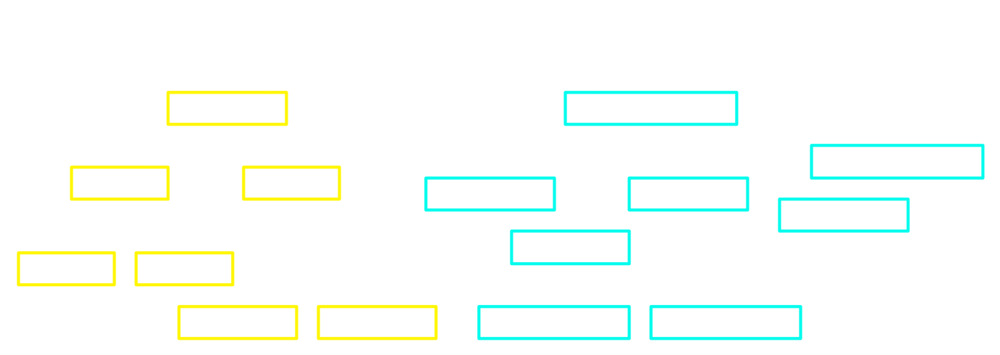 File types can only be reassigned within the same subbranch(SingleFile, FileCollection)
DataProviders
So where ARE those files?
- Each file is associated with a single DataProvider
- The provider's role is to know where the file's content is stored
- The provider has a generic API for transfering content in/out
- A provider is NOT a posix file API
- The provider handles remote connections as needed
- A CBRAIN system can have many DataProviders
DataProvider types
Provider types differ in:
- How they structure their filesystem
- How they connect to a remote host (if any)
- What types of files they support
- Whether or not two users can each have a file with the same name on it
- Whether or not a file's owner can be re-assigned
Standard vs Browsable
Standard DataProviders are for storageof files entirely managed by CBRAIN itself:
- The file structure can be non-obvious
- The content itself might not be physical files
- CBRAIN doesn't expect any changes that it didn't do itself
Browsable DataProviders are for more convenient data-exchange:
- The files are in normal directories
- The structure is usually flat
- External processes can add or remove files
- When new files are added, they can be registered (i.e. a DB entry is added)
Userfiles and their DPs
# Table: userfiles +----+--------------------------------------------------+-------------------+ | id | type | name | data_provider_id | +----+--------------------------------------------------+-------------------+ | 12 | SingleFile | nihpd3.tar.gz | 2 | | 34 | TextFile | abc.txt | 3 | | 55 | FileCollection | dicom_files | 3 | | 98 | DicomCollection | more_dicoms | 3 | +----+--------------------------------------------------+-------------------+
# Table: data_providers +----+--------------------------------------------------+-------------------+ | id | type | name | config_stuff_cols | +----+--------------------------------------------------+-------------------+ | 2 | EnCbrainSmartDataProvider | MainStore | paths, hosts, | | 3 | IncomingVaultSmartDataProvider | SFTP-1 | credentials etc | +----+--------------------------------------------------+-------------------+
Two SQL tables (excerpt)
File manager example
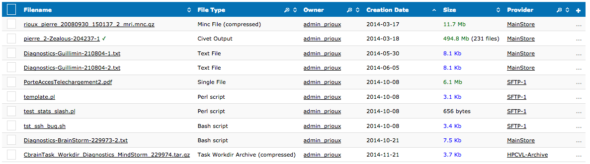Caching
- Each Rails application has a data cache
- A programmer always work with the content in that cache
- New files:
- create database entry
- create data in cache (mkdir, open/write etc)
- sync_to_provider()
- Existing files:
- find database entry
- sync_to_cache()
- use data in cache (or modify it)
- sync_to_provider() (if modified)
So many caches!
Coding with DPs
 Note: for convenience, all DataProvider API methods are provided directly on UserfileThe SyncStatus framework
All data transfer operations are tracked using the SyncStatus model.At any one time:
- Many Rails app can download the same file's content
- Only one Rails app can upload the file's content
Also:
- Timestamps track how long ago synchronization happened
- Caches have expiry dates
- API calls allow a programmer to mark cache as new/obsolete etc
- The SyncStatus API itself is low-level and rarely invoked directly
- Users can manually clean the caches (e.g. for sensitive data)
CBRAIN
Viewing Data In Browser
Userfile Viewers

Viewer web content area
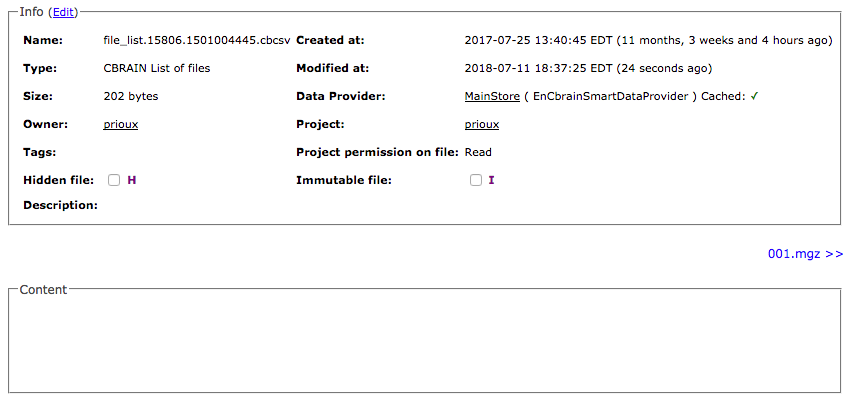 Top region is database content, bottom region is file type, plugin contentCbrainFileList as TextFile
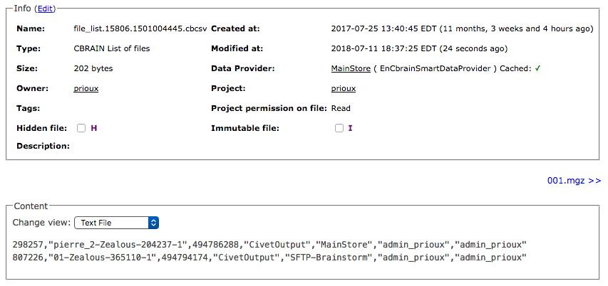CbrainFileList as CsvFile
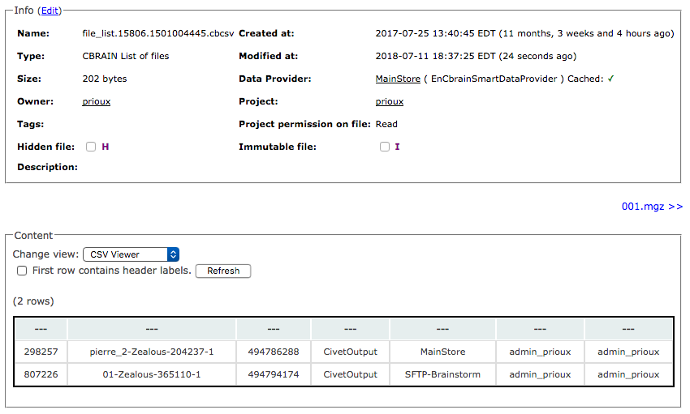CbrainFileList as itself
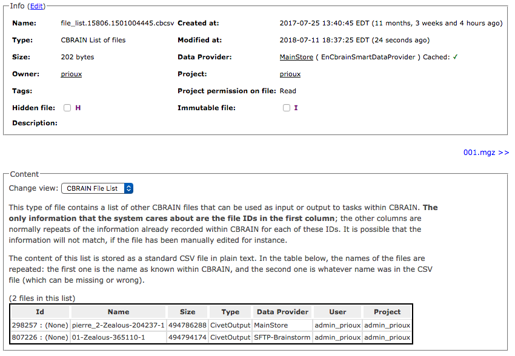Userfile Viewer Code
# CBRAIN Ruby model for MP3 audio files.
class Mp3AudioFile < AudioFile # AudioFile is a SingleFile
has_viewer :name => 'MP3 Audio', :partial => :html5_mp3_audio, :if => :is_locally_synced?
def self.pretty_type
"MP3 Audio File"
end
end
<audio controls="controls" preload="none">
<source src="<%= content_userfile_path(@userfile) %>" type="audio/mp3" />
MP3 audio not supported in this browser.
</audio>
CBRAIN
Processing files
How supercomputers work
- They expect a script to be submitted
- Each supercomputer has its own submission system
- Each supercomputer has its own filesystem layout
- You have to transfer your data in and out
CBRAIN's goal for users
- No need to learn how the supercomputer works
- Just select files in CBRAIN, select a tool, a click go!
- This can result in thousands of tasks quickly submitted
The CbrainTask model
# Table: cbrain_tasks +----+--------------------------------------------------+---------+------------+ | id | type | bourreau_id | user_id | params | +----+--------------------------------------------------+---------+------------+ | 38 | Civet | 3 | 5 | (yaml) | | 79 | Minc2Niftii | 4 | 3 | (yaml) | | 88 | ReconAll | 4 | 3 | (yaml) | +----+--------------------------------------------------+---------+------------+SQL table (excerpt)
Task programmer's job
A basic CbrainTask requires a programmer to implement these files:
| File path in plugin | Role |
|---|---|
| .../portal/taskname.rb | Portal-side code |
| .../views/_task_params.html.erb | Input form for task params |
| .../views/_show_params.html.erb | View code for task info |
| .../bourreau/taskname.rb | Bourreau-side code |
Note: these are the core files only, there are many more
Portal-side code
Its role:
- Validate the initial files selected by user
- Validate the parameters supplied by the form
- Return one (or several) CbrainTask objects, pre-filled
- The CbrainTask objects do not even have to all be of the same class as the Ruby Class!
Minimal Portal code
class CbrainTask::Stupid < PortalTask
def before_form # verify stuff before rendering the form
ids = params[:interface_userfile_ids] # array of ids
raise "Need at least one file selected" if ids.size == 0
"" # Means all is OK
end
def after_form # verify or do stuff after form submitted
"" # I could do something here too
end
def final_task_list # framework expects an array of task objects to be saved
[ self ] # This is actually the default behavior in PortalTask
end
end
Note: many features not shown: default params values, pretty param names, etc, etc
Parameter forms
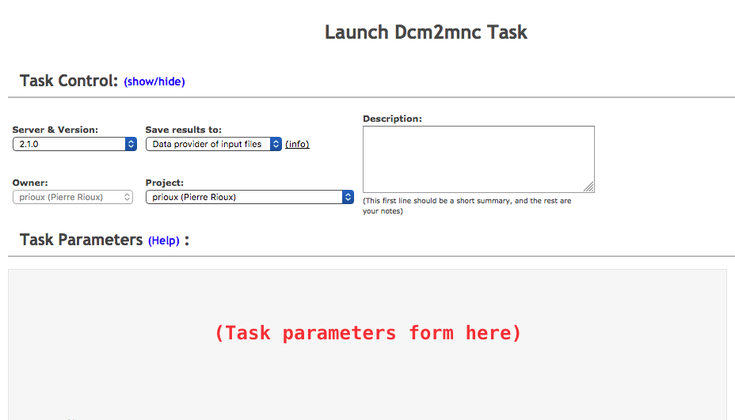Sample params form
This task has <%= (params[:interface_userfile_ids] || []).size %> files in its input list.
<p>
Name for planet: <%= form.params_text_field :name_of_planet %><br>
Destroy it? <%= form.params_check_box :destroy_planet %><br>
Params form appearance
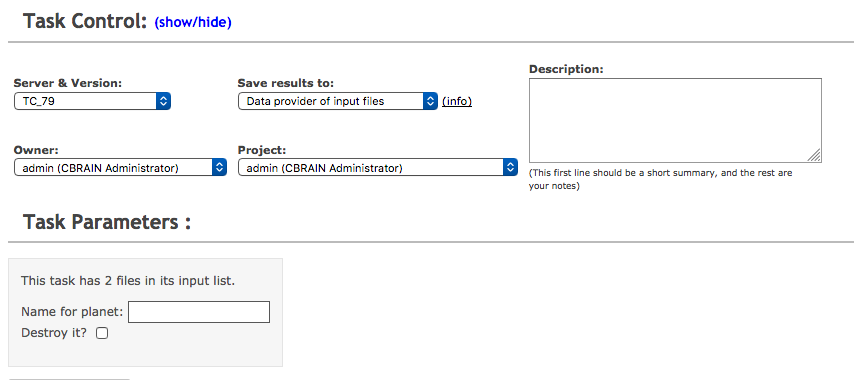Generated HTML form code
This task has 2 files in its input list.
<p>
Name for planet: <input name="cbrain_task[params][name_of_planet]"
id="cbrain_task_BRA_params_KET__BRA_name_of_planet_KET_"
value=""
type="text"
>
<br>
Destroy it? <input name="cbrain_task[params][destroy_planet]"
value="0"
type="hidden"
>
<input name="cbrain_task[params][destroy_planet]"
id="cbrain_task_BRA_params_KET__BRA_destroy_planet_KET_"
value="1"
type="checkbox"
>
<br>
Note: manually reformatted for easier inspection
CbrainTask object content
class TasksController < ApplicationController
# Rails will send all the HTML form inputs all
# structured nicely, e.g.
#
# params = { :cbrain_tasks => { :description => 'a test', # a normal attribute
# :params => { :planet_name => 'Mars'... },
# # other attribute here
# } }
def create # POST /tasks
post_params = params[:cbrain_tasks] # Provided by Rails
@task = CbrainTask.new(post_params) # Store everything in a new object
# @task.description == 'a test'
# @task.params[:planet_name] == 'Mars' etc
# Invoke task callback methods here for @task
# Create entries in DB with @task, etc
end
end
The (almost) full diagram
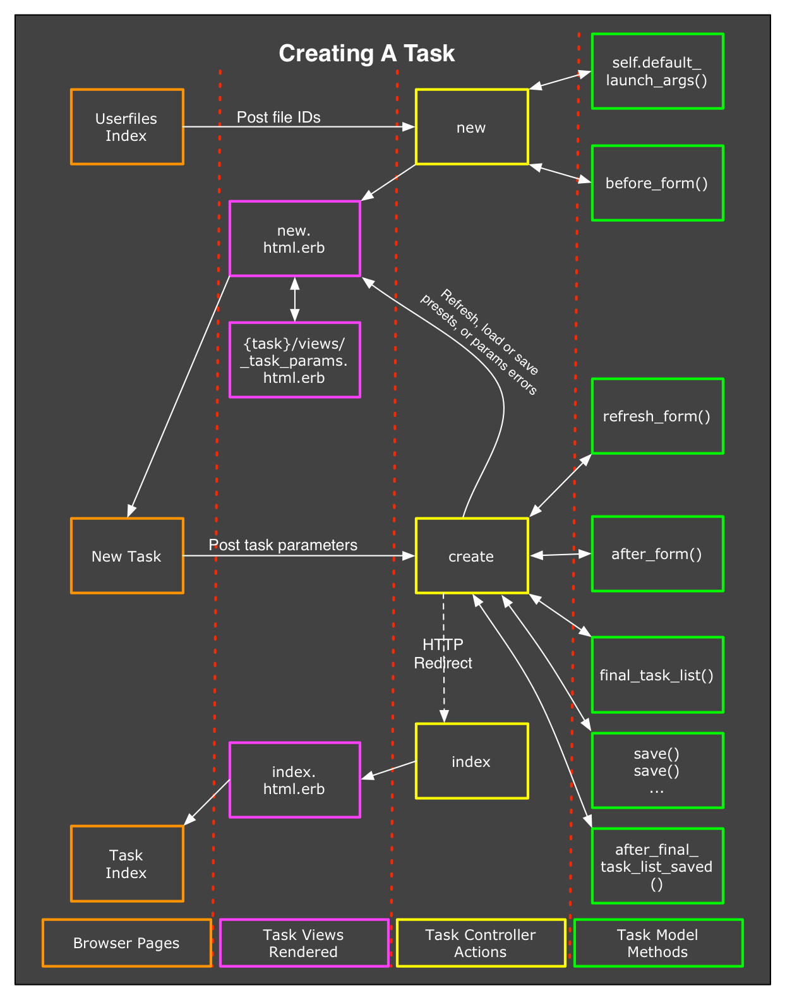Note: Click image to open it in a new tab
Bourreau-side code
Its role while setting up:
- Synchronize the input files locally
- Build and return a bash script
Its role after a job has completed:
- Verify that the job seems to have completed properly
- Take the result files, create new Userfiles, and upload to the DP
Skeleton Bourreau code
class CbrainTask::Stupid < ClusterTask
def setup
# Set up all that's needed to run the process
end
def cluster_commands
# Return a bash script
end
def save_results
# Verify that processing is OK;
# if so, save the results as new CBRAIN files
end
end
Execution context?
The bourreau-side code can rely on many thingsset up by the CBRAIN framework:
- A work directory for the task (cwd)
- Prerequisites are fulfilled (more on that later)
- $PATH and bash modules etc... are all set up
- The local DataProvider cache is available for file input/output
The task programmer does not have to set any of these things up.
Bourreau: Setup
def setup
my_params = self.params # a hash with arbitrary content, usually the scientific parameters
# Extract info about our file (we only use the first in this demo code)
file_id = params[:interface_userfile_ids].first # first of an array of IDs
f = Userfile.find(file_id)
# We need to make sure our input data is ready locally
f.sync_to_cache
# I could also use f.cache_full_path here to refer to sync'ed content
true # all good!
end
Bourreau: Commands
def cluster_commands
my_params = self.params
# Extract info about what to do
pname = params[:planet_name]
killit = params[:destroy_planet] == '1'
file_id = params[:interface_userfile_ids].first # first of an array of IDs
fpath = Userfile.find(file_id).cache_full_path
# Build the script or command to run on the supercomputer
command = "planet_manager -p #{pname} -f #{fpath}" # not shown: helpers to avoid injection
command += " -k YES" if killit
return command
end
This builds the simple bash script
planet_manager -p pluto -f /path/to/userfile/cacheor, if the checkbox destroy_planet was set,
planet_manager -p pluto -f /path/to/userfile/cache -k YES
Bourreau: Final Checks
def save_results
# Check that the task worked fine
return false unless File.exists? "report.txt"
new_cb_file = Textfile.new(:name => "PlanetReport", more_other_args_here)
new_cb_file.save!
# Next line: copies the content to the cache, then autosync to DataProvider
new_cb_file.cache_copy_from_localfile("report.txt")
true
end
Task Status States
- Tasks have states, a string
- States are assigned and modified by CBRAIN
- Some changes are made by the portal, some by the Bourreau
- Some changes are active, other passive (observation on supercomputer)
Task State Diagram
In red: states where the Ruby code of previous slides is run.
Note: Full explanations on the CBRAIN GitHub Wiki
Scir
"Simple Cluster Interface in Ruby"
- It's a set of Ruby classes and subclasses
- Written from scratch when DRMAA failed miserably
- It knows how to interact with different supercomputers:
- Submit bash scripts
- Query supercomputer status
- Query job status
- Cancel, hold, suspend jobs etc
- Supports: PBS/Torque, MOAB, SLURM, SGE, SharcNet, Amazon EC2, LSF, Cobalt, and plain Unix jobs
Task Dependencies
Tasks are generally independent of each other.
But there is an API to control their progression
based on the states of other tasks.
There are two stop points in the state diagram:
- At the state Setting Up
- At the state Post Processing
A task can be prevented from entering these states until an arbitrary number of other tasks are in an arbitrary set of other states.
A task can even depend on another task being in a Failed state!
Task Dependencies API
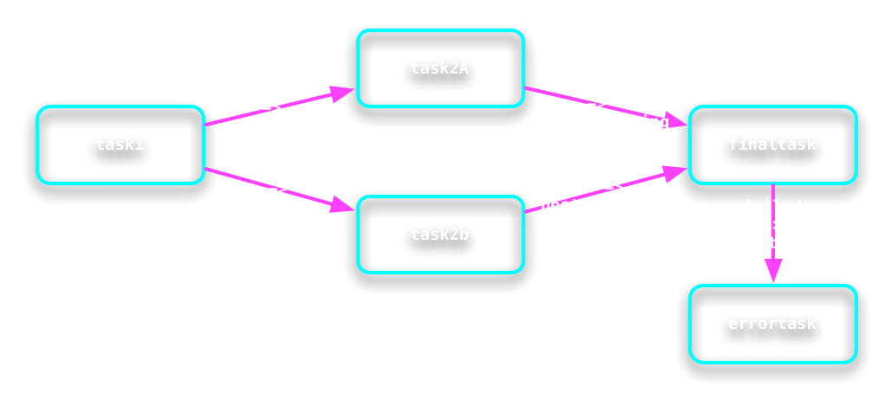
# Example of setting up the dependencies above
task2a .add_prerequisites_for_setup( task1, "Queued" )
task2b .add_prerequisites_for_setup( task1, "Queued" )
finaltask .add_prerequisites_for_post_processing( task2a, "Completed" )
finaltask .add_prerequisites_for_post_processing( task2b, "Completed" )
errortask .add_prerequisites_for_setup( finaltask, "Failed" )
Sharing Work Directories
By default each task gets its own work directory.However, any group task or group of tasks can be configured with an option to share the work directory of another task.
This, of course, can only work if all the tasks
are launched on the same supercomputer.
# Example of making sure task1, task2a and task2b all
# share the same work directory.
task2a.share_workdir_with( task1 )
task2b.share_workdir_with( task1 )
Task Restartability
Tasks that have succesfully Completed can be restarted.
- The attribute run_number is increased (it starts at 1)
- The restart can be triggered at three states in the task's lifecycle:
- At the setup stage
- At submission to the supercomputer
- At the post processing stage
Task Error Recovery
Supercomputers, network connections, file servers andrandom number generators are all unreliable!
So tasks can fail at different stages for different reasons:
- System reasons (network, files, etc)
- Pipeline dependencies (other tasks states)
- Task-specific (bad parameters, bad input files etc)
The CBRAIN interface allow users to retry tasks that have failed.
About Restart and Recover
For these two features, a task programmershould provide some handler methods
class CbrainTask::Something < ClusterTask
# Restartability Methods
def restart_at_setup
def restart_at_cluster
def restart_at_post_processing
# Error Recoverability Methods
def recover_from_setup_failure
def recover_from_cluster_failure
def recover_from_post_processing_failure
end
However, by following CBRAIN programming guidelines, a programmer can also avoid having to write these methods by making the other standard API methods restartable and recoverable naturally.
Example: restarting at setup
Standard Way
class CbrainTask::Something < ClusterTask
def setup
# symlink() raise an exception
# if target exists!
File.symlink cache_data, "my_input"
end
def restart_at_setup
File.rm "my_input"
end
end
Easy Way
class CbrainTask::Something < ClusterTask
include RestartableTask # adds trivial restart_at_setup()
def setup
# safe_symlink() is a CBRAIN helper method
safe_symlink cache_data, "my_input"
end
end
Task States: Restarting
In red: states where the Ruby code in handlers is run.
Task States: Recovering
In red: states where the Ruby code in handlers is run.
Task Archiving, Relocation
If a programmer strictly respects theCBRAIN task programming guidelines:
- All files in the workdir will use relocatable symlinks
- No hardcoded full paths are present in the scripts
In that case, a task's work directory can be archived (turned into a .tar.gz), moved about, and even restarted on another supercomputer!
ToolConfigs
When a task is launched, it is not only associatedto a supercomputer, but also to a set of
ToolConfig objects in the database.
ToolConfigs are created by the administrator
using the interface. They provide configuration information
for a version of a scientific tool on a specific supercomputer.
- Environment variables (PATHs, etc)
- Supercomputer parameters (nodes, cores, queue names)
- Arbitrary bash prologues (source init.sh, etc)
This also means that the CBRAIN system itself, when deployed, is free of all the requirements of the tools it supports.
Up to three ToolConfigs
A task's configuration can be affected by upto 3 (three, trois, drei, tres) ToolConfigs.
- A ToolConfig for any tasks types on the current supercomputer
- A ToolConfig the current task type on any supercomputers
- A ToolConfig the current task type on the current supercomputers
The first two are optional, the last one is mandatory.
They are applied in this order.
The user usually selects the third one, and the first two
are applied automatically as necessary.
This gives the opportunity for the system administrator
to provide default configurations for task types, for supercomputers,
or more specifically for a task on a supercomputer.
Automatic Parallelization
- When a set of tasks is submitted, the admin can configure a ToolConfig attribute for parallelizing them.
- CBRAIN will launch the tasks normally, but after they are set up they will not be submitted.
- Instead, CBRAIN will create, configure and launch one (or several) Parallelizer tasks.
- Each Parallelizer will execute the scientific tasks of 2, 3, 5, 10 etc of the original tasks.
- A Parallelizer is generic and doesn't need to know anything about the tasks it parallelize.
- Once a Parallelizer is finished, the original tasks just proceed to their post processing normally.
Boutiques
A framework for deploying tools
The CBRAIN integration was written by Rémi Bernard and Tristan Aumentado-Armstrong.
- All properties of a tool are described in a single JSON file
- CBRAIN reads that and builds everything:
- User interface (parameter form, help docs)
- Parameter validation code
- Bourreau-side code
- Boutiques comes with an interactive command-line tool to build such JSON descriptors
- Site: https://boutiques.github.io/
Boutiques Example
{
"tool-version": "5.0.0",
"name": "fsl_anat",
"command-line": "fsl_anat [INPUT_FILE] [INPUT_DIR] [OUTPUT_DIR] [CLOBBER_FLAG] [WEAKBIAS_FLAG]
[NO_REORIENT_FLAG] [NO_CROP_FLAG] [NO_BIAS_FLAG] [NO_REGISTRATION_FLAG] [NO_NONLINEAR_REG_FLAG]
[NO_SEG_FLAG] [NO_SUBCORTSEG_FLAG] [NO_SEARCH_FLAG] [NO_CLEANUP_FLAG] [BIAS_FIELD_SMOOTHING_VAL]
[IMAGE_TYPE] [BET_F_PARAM]",
"inputs": [
{
"command-line-flag": "-i",
"description": "Input image file (for single-image use), such as .nii.gz. Either this or an input
dir (-d) must be specified, but not both.",
"value-key": "[INPUT_FILE]",
"type": "File",
"list": false,
"optional": true,
"id": "infile",
"name": "Input file"
},
{
"command-line-flag": "-d",
"description": "Existing input directory (.anat extension) where this script will be run in place.
Either this or an input file (-i) must be specified, but not both.",
"value-key": "[INPUT_DIR]",
"type": "File",
"list": false,
(rest not shown...)
Boutiques Limitations
Although Boutiques makes integrating a new tools easier, it comes with limitations compared to CBRAIN's built-in capabilities:
- No support for mixed-types task sets
- No support for shared work directories
- Minimal support for restartability
- Minimal support for recoverability
- No support for CBRAIN 'refresh' in task forms
- No support for CBRAIN output file name generators
- No support for prerequisites and task dependencies
CBRAIN
Other CBRAIN Features
Provenance
All CBRAIN Ruby classes are aware of their own GIT revision number!
class SomeSuperSomething
# All CBRAIN ruby code has a line like this:
Revision_info = CbrainFileRevision[ __FILE__ ] # ignore the coloring error
end
# Create a new object
something = SomeSuperSomething.new
# Query the information from GIT
something.revision_info.basename # returns "some_super_something.rb"
something.revision_info.author # returns "Pierre Rioux"
something.revision_info.short_commit # returns "8f112ca9"
something.revision_info.date # returns "2018-08-01"
something.revision_info.time # returns "19:45:33 -0500"
MetaData
We can add meta data to ANY ActiveRecord object in the DB.
user = User.where(:login => 'prioux').first
user.meta # returns a handler for metadata of obj
user.meta[:age] = 76 # setter: sets value associated with :age
user.meta[:age] # getter: returns value associated with :age
task = CbrainTask.first
task.meta[:xyz] = { :hello => 2, "goodbye" => "why?" } # save arbitrary data
mysql> select * from meta_data_store; +----+-------+---------------+-------------------------------------------+ | id | ar_id | ar_table_name | key | value | +----+-------+---------------+-------------------------------------------+ | 47 | 3 | users | "age" | "--- 76\n...\n" | | 92 | 2344 | cbrain_tasks | "xyz" | "---\n:hello: 2\ngoodbye: why?\n" | +----+-------------------------------------------------------------------+
Logging
We can log information to ANY ActiveRecord object in the DB.
user = User.where(:login => 'prioux').first
user.addlog("User complained about filesystem")
task = CbrainTask.first
task.addlog("Tried to transfer files, failed.")
Each log entry is timestamped and formatted.
E.g for the user above:
[2018-02-19 16:01:07 EST] NormalUser revision 4e779042 Pierre Rioux 2015-09-28 [2018-02-19 16:01:07 EST] create() UsersController rev. 46f29825 Account created by 'admin' [2018-08-01 19:28:38 EDT] User complained about filesystemThe logging API has a rich set of methods for automatically recording the revision info of classes and code.
CBRAIN: Not described
Many other CBRAIN features were not covered in this presentation.
- CbrainFormBuilder: helps programmers make forms for tasks
- Task subtasking system (Glatard, Quirion)
- Secure communication tunnels (SSH agents with locks etc)
- Support for Singularity and Docker containers in tasks
- Per-resource user licenses
- Rich console commands extensions for admin and devs
- Internal invitation system for collaborations
- Workers and sub-workers for task management
- Userfiles can be organized in trees (parents and childs)
- Tasks can be managed as batches
- And the neat Network Operation Center
The End
Thank you
The CBRAIN features described here were created by:Tarek Sherif
Natacha Beck
Rémi Bernard
Tristan Aumentado-Armstrong
Tristan Glatard
Pierre Rioux
Project management:
Marc-Étienne Rousseau
Shawn Brown